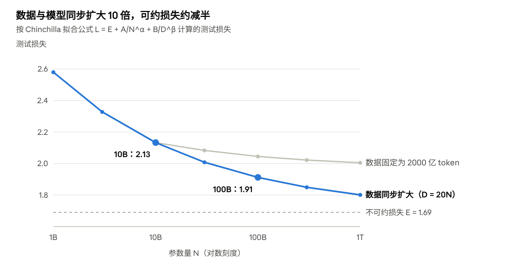
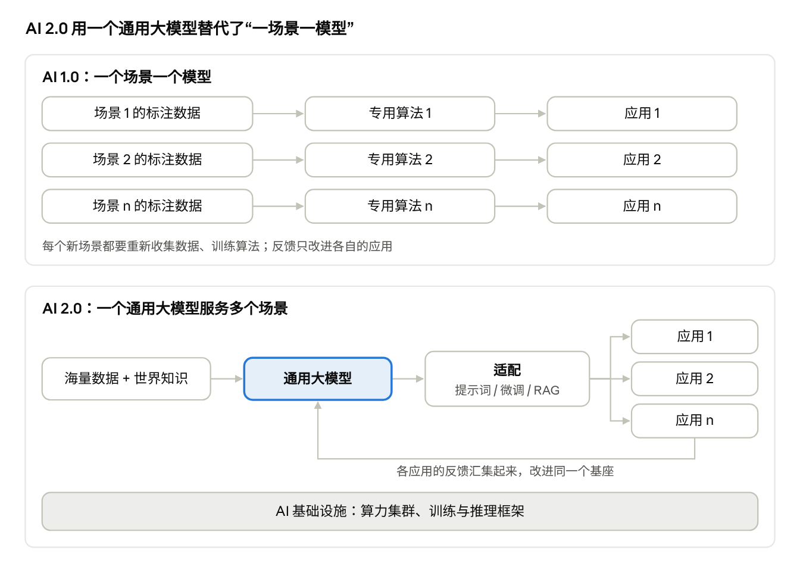

2.2 重要概念
本节介绍理解 LLM 必须掌握的五个概念：决定模型能力的三要素、把三要素联系起来的缩放定律、模型最大的顽疾幻觉、模型的长处与短板，以及由此带来的 AI 范式转变。
2.2.1 LLM 的三要��
算法、算力、数据是人工智能的三要素。在 LLM 时代，三者同时以指数速度增长。
算法（模型）：模型规模迅速增加。2018 年的 BERT-Large 有 3.4 亿参数，2019 年的 GPT-2 有 15 亿参数，2020 年的 GPT-3 有 1750 亿参数，目前最大的模型已超过万亿参数。
算力：GPU 是深度学习最常见的算力资源。从 2012 年的 NVIDIA K10 到 2020 年的 A100，单卡计算能力提升了几百倍；A100 的 FP16/BF16 张量算力约为 312 TFLOPS，其后的 H100、B200 又成倍提升，但仍不能满足大模型训练的需求。
数据：数据集规模爆炸性增长。GPT-1、GPT-2、GPT-3 的训练数据分别为约 5 GB、40 GB 和 45 TB（清洗后约 570 GB）。
| 模型 | 发布年份 | 参数量 | 训练数据 |
|---|---|---|---|
| DeepSeek-V3 | 2024 | 6710 亿（MoE，每个 token 激活 370 亿） | 约 14.8 万亿 token |
| Llama 3 | 2024 | 4050 亿 | 超过 15 万亿 token |
| LLaMA | 2023 | 650 亿 | 约 1.4 万亿 token |
| PaLM | 2022 | 5400 亿 | 约 7800 亿 token |
| GPT-3 | 2020 | 1750 亿 | 原始 45 TB，清洗后约 570 GB（约 3000 亿 token） |
| GPT-2 | 2019 | 15 亿 | WebText，约 40 GB |
| BERT-Large | 2018 | 3.4 亿 | BooksCorpus + 英文维基百科，约 33 亿词 |
| GPT-1 | 2018 | 1.17 亿 | BooksCorpus，约 5 GB |
三者并不是各自独立地变大。实际工作中常会遇到这样的问题：
计划训练一个 10B（100 亿参数）的模型，至少需要多少数据？
收集到了 1T 的数据，能训练多大的模型？
老板给了 100 张 A100，一个月后开发布会，应该用多少数据训多大的模型？
把现在 10B 的模型扩大到 100B，效果能提升多少？
回答这些问题需要一个定量工具，这就是缩放定律。
2.2.2 缩放定律、压缩与涌现
关于”规模”的研究有三个核心观点：缩放定律说明规模与性能之间有可预测的关系；语言模型即压缩解释了为什么预测下一个词会带来智能；涌现能力描述了模型变大后出现的、小模型上未曾预见的新特性。
一、Kaplan 缩放定律
2020 年，OpenAI 的 Kaplan 等人在大量实验中发现：模型的测试损失 L 与三个量各自呈幂律关系——参数量 N（不含 embedding）、数据量 D（token 数）和训练计算量 C。只要另外两个因素不成为瓶颈，这一趋势跨越了 6 个数量级：
\[L(N) = \left( \frac{N_{c}}{N} \right)^{\alpha_{N}},\quad L(D) = \left( \frac{D_{c}}{D} \right)^{\alpha_{D}},\quad L(C) = \left( \frac{C_{c}}{C} \right)^{\alpha_{C}}\]
其中 α_N ≈ 0.076，α_D ≈ 0.095，α_C ≈ 0.050。幂律在双对数坐标下是一条直线，换句话说：规模每增大一个数量级，损失下降一个固定的比例。这就是”效果随规模指数增加而线性提高”的含义。
这项研究还有几个重要观察：
规模比形状重要。在总参数量固定时，层数、宽度、注意力头数的不同组合对性能影响很小。
边际递减。幂律意味着每一点提升都要付出成倍的代价，性能最终会逼近一个下限。
模型与数据必须同步增长。只加大模型、不增加数据，模型会过拟合；只增加数据、不加大模型，同样会遇到边际递减。
二、计算量公式 C ≈ 6ND
训练计算量与参数量和 token 数之间有一个非常有用的近似关系：
\[C \approx 6ND\]
这个”6”是这样来的：前向传播时，每个参数对每个 token 做一次乘法和一次加法，共 2 次浮点运算；反向传播既要对激活求梯度、又要对权重求梯度，计算量约为前向的 2 倍，即 4 次。合计每个参数、每个 token 约 6 次浮点运算。推理时只有前向，所以生成一个 token 约需 2N 次运算。
Kaplan 等人还给出了算力增长时的最优分配：N ∝ C^0.73，最优批大小 B ∝ C^0.24，最优训练步数 S ∝ C^0.03。也就是说，算力增加时，大部分应该花在加大模型上，训练步数几乎不变。GPT-3 用 1750 亿参数只训练了约 3000 亿 token，正是这一结论的产物。
三、Chinchilla 的修正
2022 年，DeepMind 的 Hoffmann 等人训练了 400 多个模型，发现 Kaplan 的分配方案低估了数据的作用。他们的结论是：模型和数据应当等比例扩大，即 N ∝ C^0.5、D ∝ C^0.5，最优配比约为每个参数 20 个 token（D ≈ 20N）。为了验证，他们用与 2800 亿参数的 Gopher 相同的算力，训练了只有 700 亿参数、但用了 1.4 万亿 token 的 Chinchilla，结果 Chinchilla 在几乎所有任务上都超过了 Gopher。
Chinchilla 论文还拟合了一个同时包含 N 和 D 的损失公式：
\[L(N,D) = E + \frac{A}{N^{\alpha}} + \frac{B}{D^{\beta}},\quad\quad E = 1.69,\ A = 406.4,\ B = 410.7,\ \alpha = 0.34,\ \beta = 0.28\]
三项各有含义：E 是不可约损失，代表自然语言本身的不确定性，再大的模型也消除不了；第二项是模型容量不足带来的损失；第三项是数据不足带来的损失。
四、用缩放定律回答四个问题
下面用 C ≈ 6ND、D ≈ 20N 和上面的拟合公式，逐一回答 2.2.1 节提出的问题。这些都是数量级估算，用来做决策参考。
问题 1：10B 模型需要多少数据。按 D ≈ 20N，约需 2000 亿 token，对应计算量 C ≈ 6 × 10^10 × 2 × 10^11 = 1.2 × 10^22 FLOPs。
问题 2：1T 数据能训多大的模型。若指 1 万亿 token，N ≈ D / 20 = 500 亿参数。若指 1 TB 文本，需要先换算成 token：英文大约每 4 字节一个 token，1 TB 约为 2500 亿 token，对应约 125 亿参数。中文的换算比例取决于分词器，需要实测。
问题 3：100 张 A100 训练一个月。先算总算力。A100 的 BF16 算力为 312 TFLOPS，实际训练中硬件利用率（MFU）按 40% 计：
\[C = 100 \times 312 \times 10^{12} \times 0.4 \times (30 \times 86400\,\text{s}) \approx 3.2 \times 10^{22}\ \text{FLOPs}\]
代入 C = 6ND 与 D = 20N，得 C = 120N²，解出 N ≈ 164 亿参数、D ≈ 3300 亿 token。所以最合理的方案是训练一个 15B 左右的模型，喂入约 3000 亿 token。考虑到调试和故障恢复会占用时间，实际应再留 10%–20% 的余量。
问题 4：10B 扩大到 100B 能提升多少。假设两者都按最优配比训练（10B 用 2000 亿 token，100B 用 2 万亿 token），代入拟合公式得 L(10B) ≈ 2.13、L(100B) ≈ 1.91。总损失只下降约 10%，但扣除不可约的 E = 1.69 后，可约损失从 0.44 降到 0.22，正好减半。代价是计算量增加 100 倍。如果只加大模型、数据仍是 2000 亿 token，损失只能降到 2.05，大部分收益就浪费了。

图 2-4 · 由 Chinchilla 拟合公式（Hoffmann 等，2022）计算，1B–1T 参数
蓝线是模型与数据同步扩大的情形，灰线是数据固定、只加大模型的情形：后者很快趋于平缓，就是”数据成为瓶颈”的含义。
五、超越 Chinchilla：训练最优不等于部署最优
Chinchilla 法则回答的是”给定训练算力，怎样训出损失最低的模型”。但模型训练一次、要被调用亿万次，推理成本与参数量成正比。因此业界普遍”超量训练”小模型：LLaMA-7B 用了 1 万亿 token，Llama 3 8B 用了超过 15 万亿 token，每个参数达到上千个 token，远超 20 的配比。此外，2024 年以来的推理模型（如 OpenAI o1、DeepSeek-R1）表明，增加推理时的思考长度也能稳定提升性能，这被称为测试时计算的缩放。
六、语言模型就是压缩
为什么”预测下一个词”这么简单的目标，能训练出看起来会思考的模型？一个有力的解释来自信息论。香农证明，如果一个模型给第 t 个词的概率是 p，那么配合算术编码，这个词可以用约 −log₂p 比特存储。记整段文本的压缩长度为 B（单位为比特），则：
\[B \approx - \sum_{t = 1}^{T}\log_{2}P_{\theta}(w_{t} \mid w_{< t})\]
这恰好是语言模型的训练损失（换算到以 2 为底）。所以，降低损失与提高压缩率是同一件事。而要把一份内容压缩得足够好，就必须发现其中的规律：压缩物理教科书的最好办法，是掌握牛顿定律。DeepMind 的 Delétang 等人（2023）用实验验证了这一观点：只在文本上训练的 Chinchilla 70B，把 ImageNet 图像块压缩到原始大小的 43.4%、把 LibriSpeech 语音压缩到 16.4%，优于专用的 PNG（58.5%）和 FLAC（30.3%）。
七、涌现能力
Wei 等人（2022）把涌现能力定义为：在小模型中不存在、在大模型中出现的能力。典型的例子包括：
情景学习：只看几个示例就能完成新任务，GPT-3 将其带入大众视野。
思维链（Chain-of-Thought）推理：提示”一步一步地思考”时，大模型的数学应用题准确率大幅提升，小模型却没有改善甚至变差。
指令遵循：经过指令微调后，大模型能完成训练中从未见过的指令。
涌现是否真实存在仍有争议。Schaeffer 等人（2023）指出，许多”突然出现”的能力来自评测指标的选择。如果用”完全匹配”这种非对即错的指标，一道五位数加法题要每一位都对才算对，模型逐位准确率的平滑提升就会被放大成陡峭的跳变；换成连续指标后，曲线往往变得平滑。这提醒我们：缩放定律描述的损失是平滑可预测的，而具体任务能力何时”可用”则较难预测。
2.2.3 幻觉及其解决方法
幻觉（Hallucination）指模型生成的内容看起来流畅可信，却与事实、上下文或用户要求不符。它是 LLM 走向医疗、法律、金融等严肃场景的最大障碍。
一、幻觉的四种表现
| 类型 | 表现 | 例子 |
|---|---|---|
| 上下文矛盾 | 前后说法不一致 | 前文说”张三是独生子”，后文又写”张三和他的哥哥” |
| 与提示词要求不一致 | 没有按用户的指令执行 | 要求”用英文、不超过 50 字”，却用中文写了 300 字 |
| 与事实矛盾 | 编造不存在的事实、数据或文献 | 给出一篇根本不存在的论文标题和作者 |
| 荒谬的回复 | 内容与问题无关或不合逻辑 | 问天气，却回答了一段无关的菜谱 |
二、幻觉为什么会产生
基本原理是”文字接龙”。模型优化的是”接得顺”，而不是”接得对”。它没有一个独立的”事实库”可以核对，只有统计上的共现关系。
采样引入了随机性。为了让输出多样，生成时常用 top-K 采样（只在概率最高的 K 个词中抽取）或 top-P 采样（在累计概率达到 P 的最小词集合中抽取）。这意味着概率较低的错误词也有机会被选中。
数据质量问题。训练数据中有错误、过时或矛盾的信息，或者某些领域覆盖不足、缺乏多样性。一个事实在训练数据里只出现过一次，模型就很难记住。
过拟合。模型记住了训练数据的表面模式，例如”论文引用长什么样”，就能编出格式完美但内容虚假的引用。
逐 token 生成的误差累积。模型一旦生成了一个错误的词，后续内容会以这个词为条件继续生成，为了前后自洽反而越编越多。
提示词不准确。问题含糊或包含错误前提（“请介绍鲁迅和周树人的辩论”），模型倾向于顺着前提回答而不是纠正它。
OpenAI 的 Kalai 等人（2025）还指出一个常被忽视的原因：大多数评测只统计答对率，回答”我不知道”得 0 分，猜一个答案却有机会得分。就像不倒扣分的选择题考试，模型被训练成了”宁可瞎猜也不弃权”。
案例：不存在的判例
2023 年，纽约一名律师在代理一起起诉哥伦比亚航空公司的人身伤害案（Mata v. Avianca）时，用 ChatGPT 检索判例，并把它给出的六个判例写进了提交给法院的文件。这些判例有案名、有案号、有引文，格式无可挑剔，却没有一个真实存在。律师曾追问 ChatGPT 这些判例是否真实，它的回答是肯定的。法官最终对涉事律师及其律所处以 5000 美元罚款。
同年 2 月，Google 在宣传其聊天机器人 Bard 时，演示中的回答错误地声称詹姆斯·韦伯太空望远镜拍下了第一张太阳系外行星的照片。这一错误被天文学家指出后，母公司 Alphabet 的市值一天之内蒸发约 1000 亿美元。
两个案例对应了上面的多个成因：模型学到了”判例引用长什么样”这种表面模式；它没有可以核对的事实库；被追问时，讨好用户的倾向又让它继续坚持。教训是：在高风险场景中，LLM 的输出必须有可追溯的来源，并由人来核实。
三、解决方法
幻觉无法被彻底消除，只能从多个环节降低。最有效的思路是给模型接入可信的外部知识源：权威网站、企业内部文档、数据库、知识图谱等。把”先检索、再生成”做成标准流程，就是检索增强生成（RAG），它将在第五章详细介绍。其他常用方法按环节归纳如下：
| 环节 | 方法 | 作用 |
|---|---|---|
| 数据 | 清洗错误与过时数据，增加高质量、多样的语料 | 从源头减少错误知识 |
| 训练 | 在微调数据中加入”不知道就说不知道”的样本；用 RLHF 对编造行为给予负奖励 | 让模型学会弃权 |
| 解码 | 降低温度、收紧 top-P，事实类问答用接近贪心的解码 | 减少低概率错误词 |
| 提示 | 提供充分上下文，要求注明出处，允许回答”无法确定” | 缩小模型自由发挥的空间 |
| 推理 | 思维链、自洽性（多次采样取多数）、生成后自我核验 | 用冗余发现矛盾 |
| 外部知识 | RAG、工具调用（搜索引擎、计算器、数据库） | 把”记忆”换成”查资料” |
| 评测 | 对错误答案扣分、对弃权给部分分 | 消除”瞎猜”的激励 |
2.2.4 长处与短板
LLM 的长处与短板，很大程度上都是”概率模型”这一本质的两面。
| 具体表现 | 根源 | |
|---|---|---|
| 长处：理解与总结 | 快速读懂长文、提炼要点、改写风格 | 在海量文本上学到了语言的统计结构 |
| 长处：信息抽取 | 从非结构化文本中抽取实体、关系、表格 | 通用能力可以用提示直接调用，无需单独训练 |
| 长处：创意 | 写作、头脑风暴、生成代码草稿 | 采样带来多样性，能组合出新的表达 |
| 短板：专业深度 | 在细分领域不及专家，知识有截止日期 | 长尾知识在训练数据中出现次数少 |
| 短板：稳定性与安全性 | 同一问题回答不一致，会幻觉，可能被提示注入攻击 | 采样的随机性，以及对输入文本的高度敏感 |
| 短板：推理能力 | 多步逻辑、精确计算、长链规划容易出错 | 模式匹配不等于严格演绎，误差会逐步累积 |
理解这张表的意义在于：应该让 LLM 去做它擅长的事，并用 RAG、工具和智能体框架去弥补它的短板。本书后半部分正是沿着这个思路展开的。
2.2.5 AI 1.0 与 AI 2.0
LLM 带来的不只是更强的模型，还有 AI 应用开发范式的改变。AI 1.0 是”一个场景一个模型”：每个企业、每个应用场景都要单独收集数据、标注、训练专用算法。AI 2.0 是”一个大模型服务千百个场景”：用海量数据和世界知识训练一个通用大模型，再通过提示词、微调、RAG 等轻量方式适配到具体场景。

图 2-5 · AI 1.0 与 AI 2.0 的范式对比
上半部分的每条链路各自独立，下半部分所有应用共用同一个基座模型，差别只在适配这一层。
| 维度 | AI 1.0 | AI 2.0 |
|---|---|---|
| 模型与场景的关系 | 一个场景一个专用模型 | 一个通用模型服务多个场景 |
| 数据来源 | 企业自有的、需要人工标注的数据集 | 海量无标注数据，加少量场景数据 |
| 新场景的接入方式 | 重新收集数据、训练新算法 | 提示词、微调、RAG 等适配 |
| 新场景的边际成本 | 高，几乎从头开始 | 低，复用同一个基座 |
| 主要成本所在 | 数据标注与算法工程 | 基座模型预训练与 AI 基础设施 |
| 反馈闭环 | 反馈只改进单个应用 | 反馈可以汇集起来改进基座模型 |